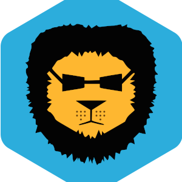

Poczatek!
Podstawy
Witajcie nowi gracze minecrafta. Zapewne jesteście tu bo albo chcecie zagrać w bed wars i chcecie dowiedzieć się czegos więcej o tej jakże wspaniałem mini gierce, albo przypadkiem ją odkryliście i szukaliście poradników jak dobrze i efektywnie grać. Nie bójcie się albowiem mam nadzieje że w tych 4 poradnikach wyjaśnie wam ogół bedwars i mam nadzieje że zostaniecie tam na dłużej.
Na początku jednak chciałbym uwzględnić pare rzeczy i sie upewnić że jeśli macie ziemniakowego kompa lub laptopa to tak czy siak będziecie mieć jak najlepsze fps.
Klient
Także chciałbym zacząć od rzeczy dośc nie oczywistej a dokładnie mówiąc o klientach Minecrafta. Każdy klient wpływa inaczej na wydajnośc więc jesli chcecie można sprawdzić któru jest dla was najlepszy. Podam przykładowe klienty dla minecrafta.
Co do ostatniego czyli Blazing packa, nie jest to dokładnie klient jest to paczka więc polecałbym to zapamiętać
Paczki Tekstur
Tutaj chiałbym omówić dość ważną część gry albowiem zmienia cały wygląd bądź też część rozgrywki Dokładniej mówiąc mowa o paczkach tekstur, są one paczkami które zmieniają wygląd przedmiotów wygląd bloków etc.. Także wpływają na fps. Paczkę możesz sobie wsadzić jaką chcesz wystraczy że ją pobierzesz z na przykład https://pvprp.com . Polecam wybrać paczkę 16x da to najwięcej. Jeżeli pobrałeś paczkę w systemową wyszukiwarkę wpisz %appdata% i wejdz w folder. Następnym krokiem będzię wejście .minecraft > resourcepack > i tam wsadzasz swoją paczkę po wejściu w minecrafta będziesz mógł ją aktywować.
Widac różnice co nie?
Ustawienia
Tutaj są wszystkie ustawienia których osobiście używam na moim ziemiakowatym lapku które daja mi najlepsze wyniki.